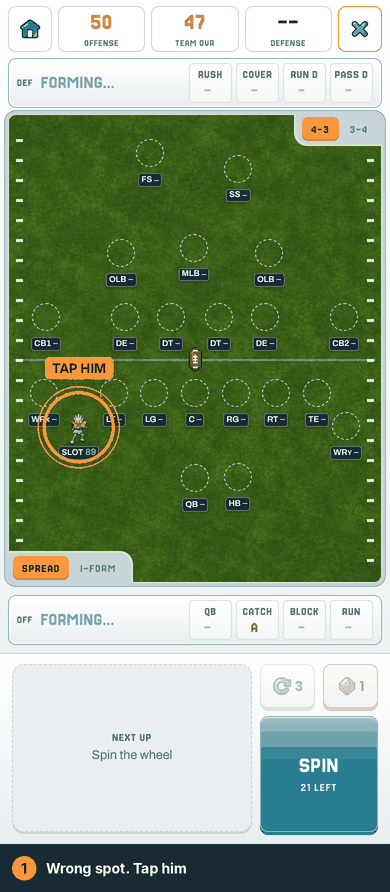
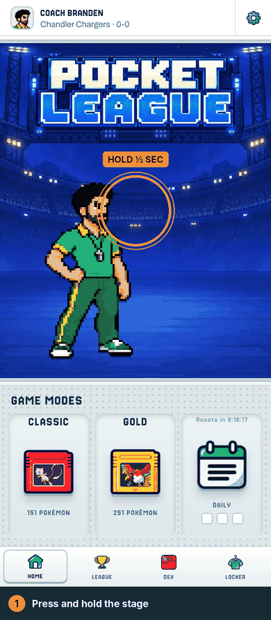
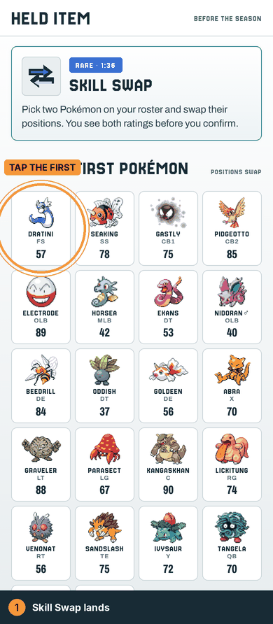
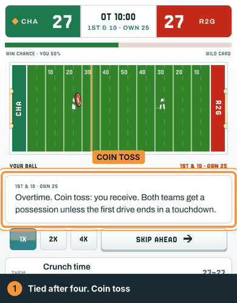
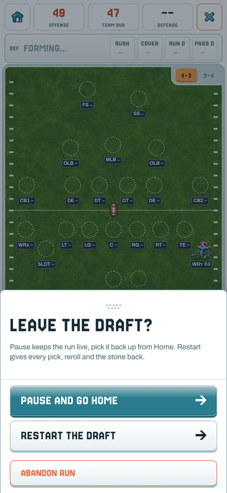
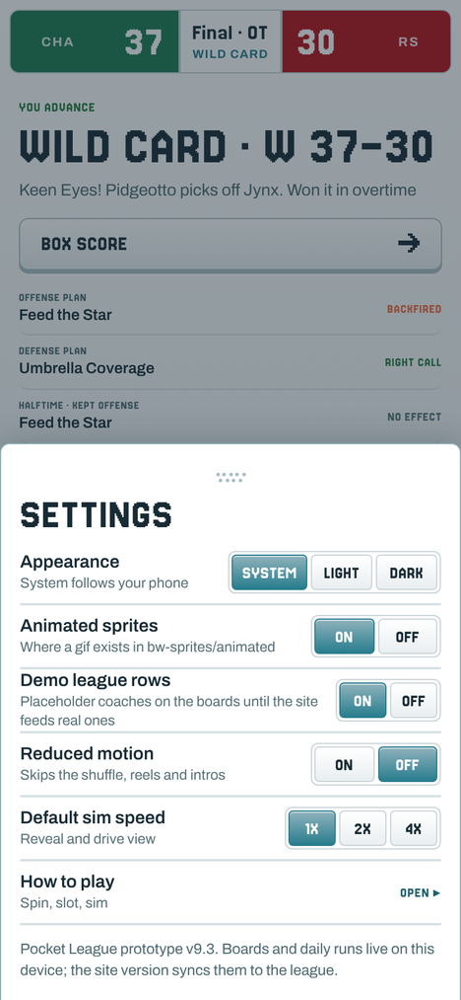

Four new things to try and a batch of fixes from your reports. The game updates itself the next time you open it. If it doesn't, close it and open it again.

Locked a guy into the wrong spot? Tap him.
One level only, and only until your next spin. After that, he's in.

Press and hold the big picture on Home for about half a second.
Your scene, your outfit and colors, your partner if you have one.

Two Pokémon on your roster trade positions. Good for a QB stuck at safety.
One swap per run. No take-backs once you confirm.

Tied after four quarters? Modern OT rules now.
No more ties, and no more secret coin flip deciding your playoff game.

The X on a draft no longer abandons it. It opens a sheet: Pause and go Home keeps the run alive (pick it up from the Home tile or the Daily tab), Restart gives every pick back, Abandon is the only one that burns the run.
Bryce lost three dailies to the old X. Not anymore.

Tap the gear on Home. The last line of Settings reads something like
Pocket League v9.3 · site v1.44.0 · build 1102-1508Send that line with any bug report so we know exactly which build you were on.
Challenge day. One day a week the daily stops being a solo run. Everybody plays the same board under the same rule and only that day's finish counts. Think a weekly ladder with points by place, a champ at the end of the week, and a pennant in the Locker to show for it.
Details, the day, and the first rule set come with the next patch. Keep your streak alive until then.